F-4 把握好尺度感
原标题：Get the Sense of Scale Right
▶ 原视频：https://youtu.be/A6Rbb5sK4nI本集的日语自动字幕几乎无法辨识，内容据画面内烧录的英文字幕（OCR）整理，时间点按画面字幕对齐。
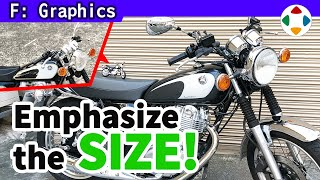
速览
监修游戏画面时，樱井非常频繁地提出的修改之一是「把尺度感做对」：例如舞台中的大物体，可能看起来像小东西。想想看，巨大的物体和它的塑料模型，一般形状和颜色相同——可见即使形状相同，尺度感也能大不相同。多数情况表现为大东西看起来比应有的小，小东西显得太大则不常见。这问题也很依赖游戏最终的画面：空气透视、环境光、光线追踪影响明显，玩具相机效果或渲染中的微缩效果也是——但先放一边。来想想同一个模型为什么会有不同的尺度感。例如贴图：贴在模型上的美术，看起来是真的还是假的？做这类贴图时常见错误是循环做得不够大，或材质画得太细：留意每块瓦片上的偏色斑点、草地细微的色相变化，要放大尺度、从远处看。另外贴图饱和度太高，就不太受环境光影响，会更显假；追求写实就别过度饱和（当然这些调整要在确立游戏氛围之后）。他觉得高光（光泽感）尤其难：光泽太多会让东西像玩具；有些大物体确实需要光泽，但限制高光面积与强度效果会截然不同。法线贴图为贴图追加决定光反射位置的信息，虽是平面却像凹凸贴图；它不匹配资源尺度，结果就会很别扭。大型机械物体还需要污渍等细节；即使是灰阶或单色物体，也最好在板材中混入不同色相。举了很多例子，但注意他从没提模型形状：形状确实也有要注意的，但优先级低于以上几点。再比较一次：模型饱和度更高、高光更强更宽、不太受环境光影响、相似材质更平更单调。CG 做的物体通常更像模型，所以要想办法弥补差距。一如既往，选择适合游戏需求的风格很重要：别只当作做模型，要尽力考虑整体。
1. 尺度感要对 0:04
监修游戏画面时，他非常频繁地提出的修改之一是「把尺度感做对」。例如舞台中的大物体，可能看起来像小东西。
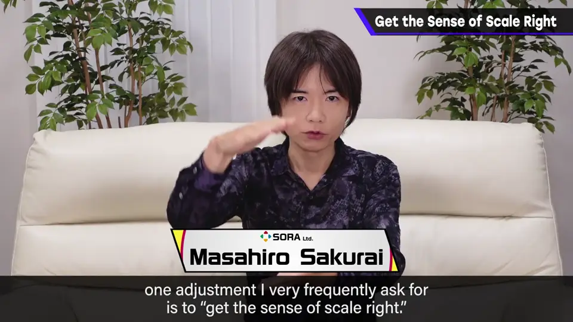
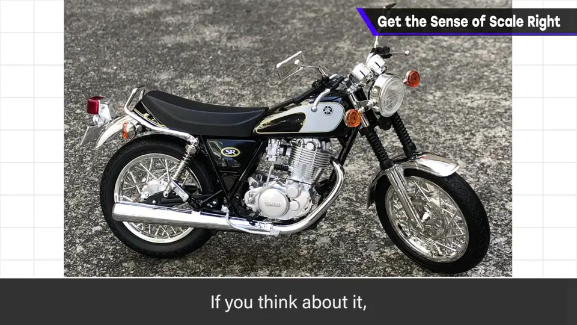
想想看，巨大的物体和它的塑料模型，一般形状和颜色都相同。
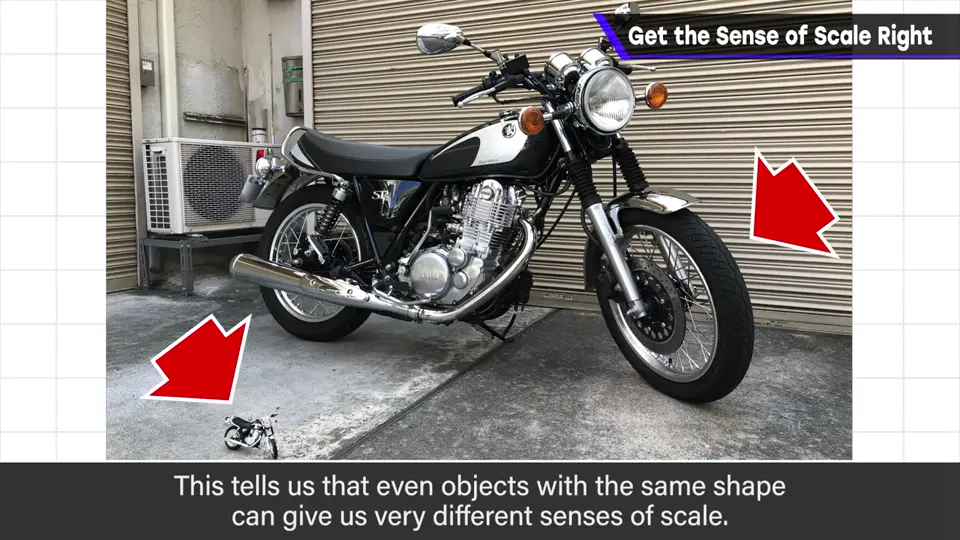
多数情况表现为大东西看起来比应有的小；小东西显得太大则不常见。
2. 最终画面的影响 0:43
这问题也很依赖游戏最终的画面：空气透视、环境光、光线追踪影响明显，玩具相机效果或渲染中的微缩效果也是。
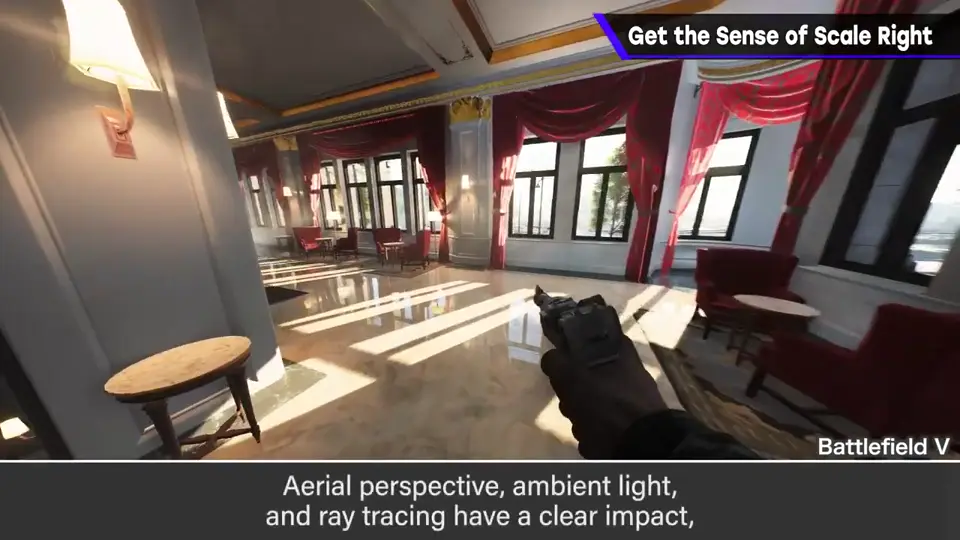
但先把这些放一边，来想想同一个模型为什么会有不同的尺度感。
3. 贴图 1:07
例如贴图：贴在模型上的美术，看起来是真的还是假的？
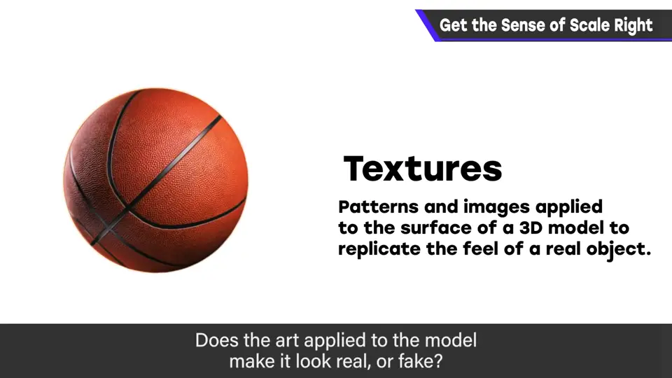
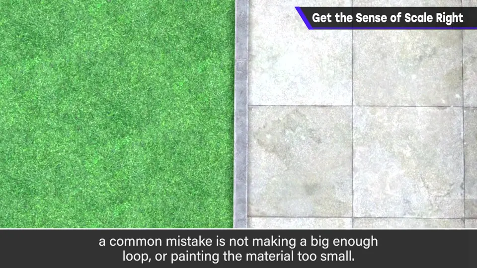
留意每块瓦片上的偏色斑点、草地细微的色相变化。要放大尺度，从远处看。
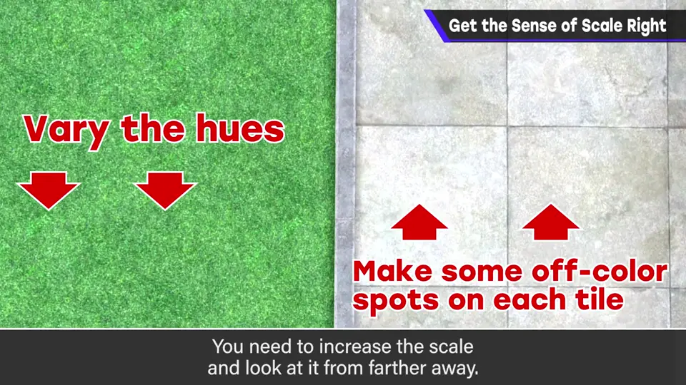
4. 饱和度 1:34
贴图饱和度太高，就不太受环境光影响，会更显假。
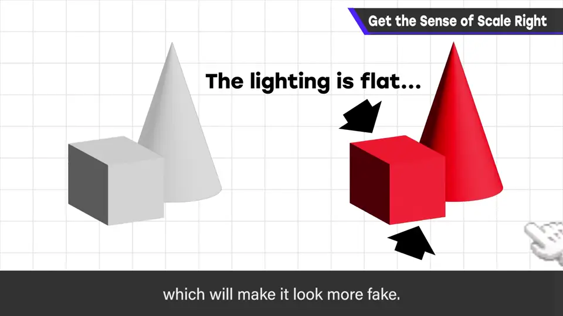
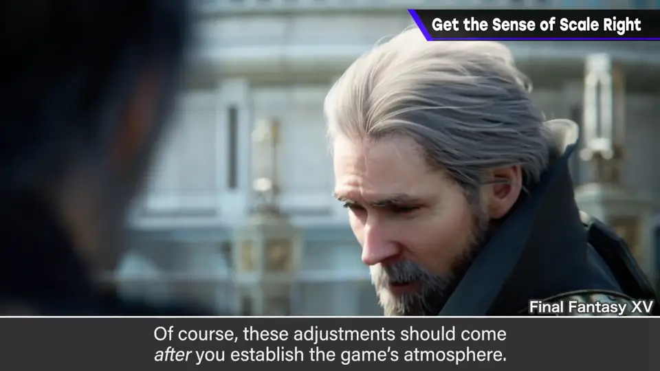
追求写实就别过度饱和。当然，这些调整要在确立游戏氛围之后。
5. 高光 1:54
他觉得高光（光泽感）尤其难把握。
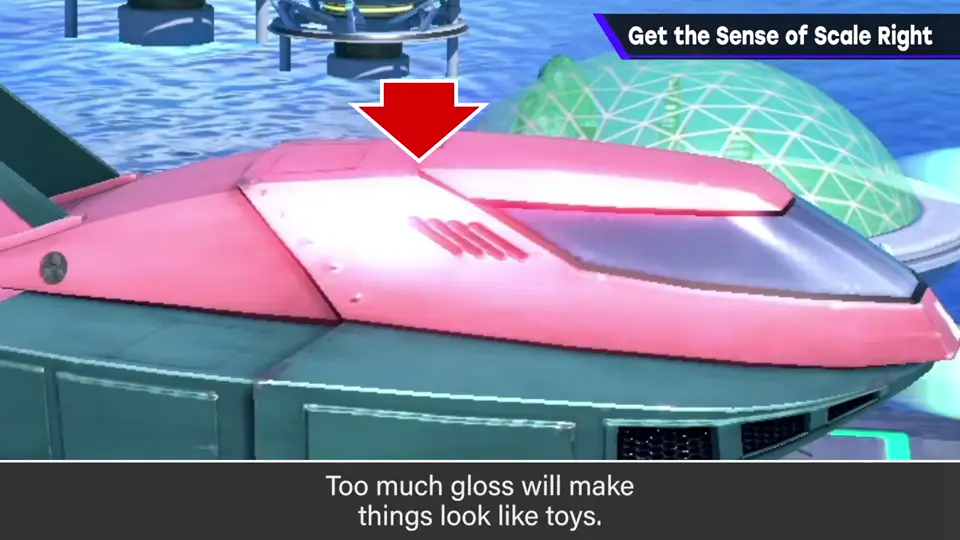
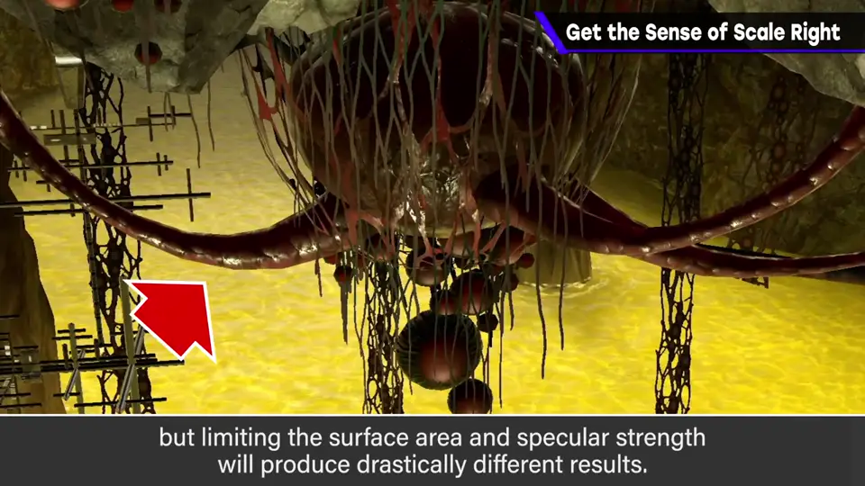
6. 法线贴图 2:13
法线贴图为贴图追加决定光反射位置的信息，虽是平面却类似凹凸贴图。
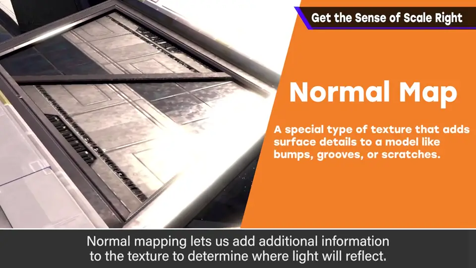
它若不匹配资源的尺度，结果就会很别扭。
7. 污渍与色相 2:31
大型机械物体还需要污渍等细节。
即使是灰阶或其他单色物体，也最好在板材中混入不同色相，增加变化。
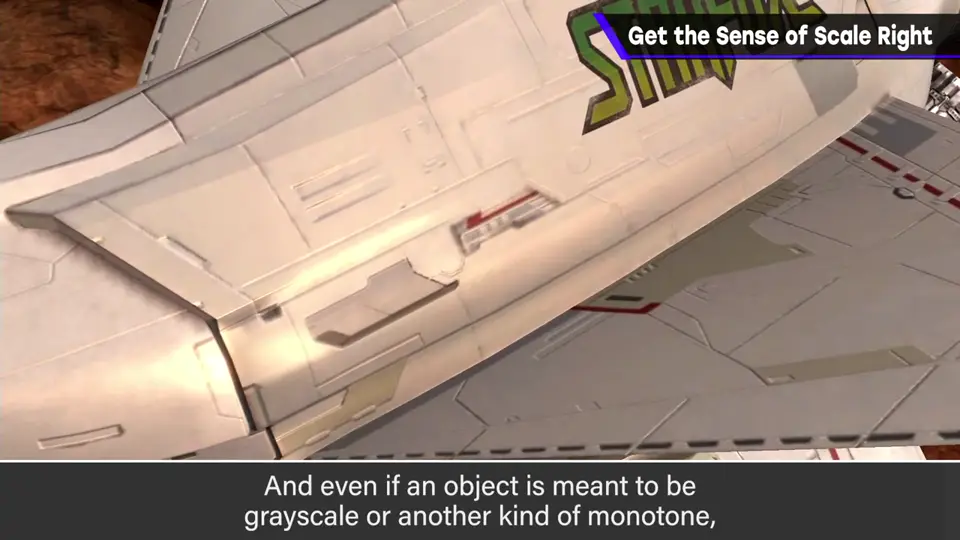
8. 形状优先级低 2:47
举了很多例子，但注意他从没提到模型的形状：形状确实有要注意的地方，但优先级低于以上几点。
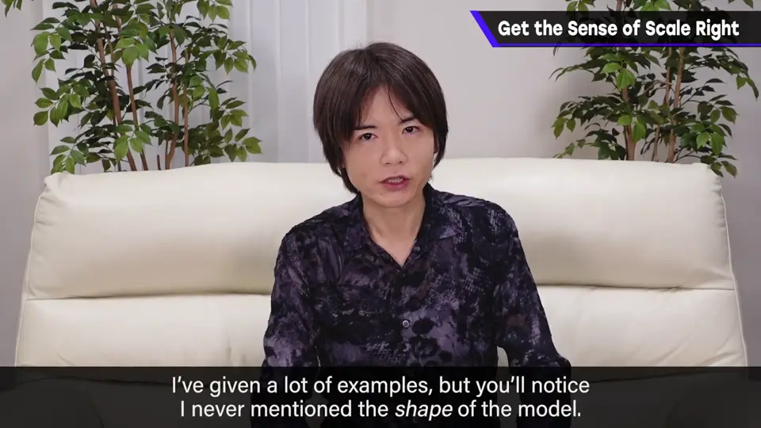
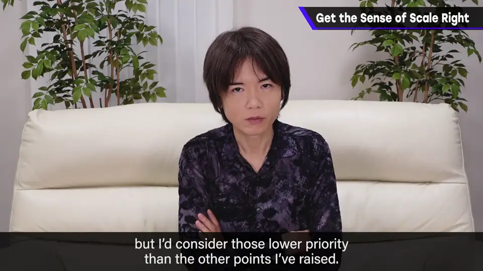
如前所示，塑料模型和实物形状相同。
9. 模型 vs 实物 3:06
| 方面 | 模型 | 实物 |
|---|---|---|
| 饱和度 | 更高 | 较低 |
| 高光 | 更强、更宽 | 有节制 |
| 环境光影响 | 小 | 大 |
| 相似材质 | 更平、更单调 | 有色相变化 |
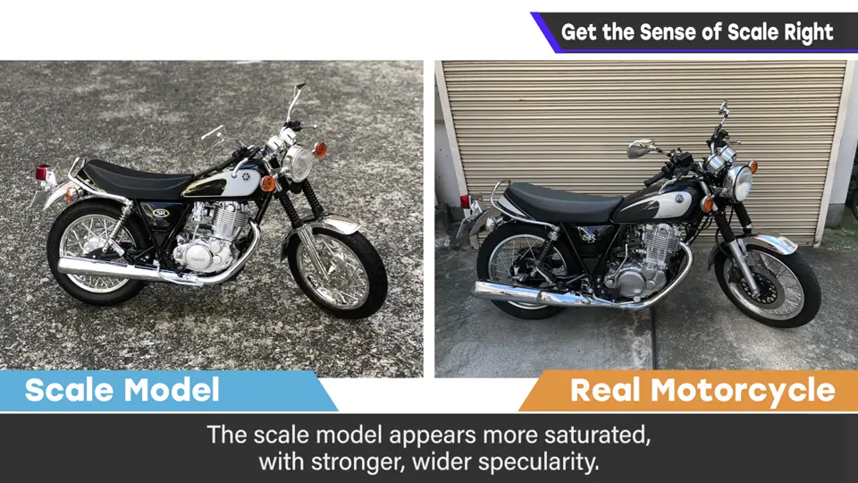
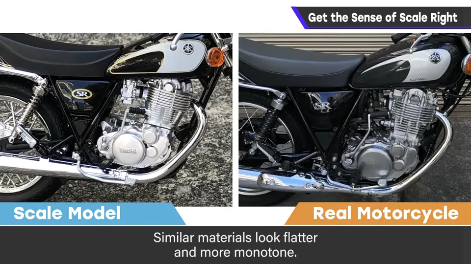
一如既往，选择适合游戏需求的风格很重要。别只当作做模型，要尽力考虑整体。
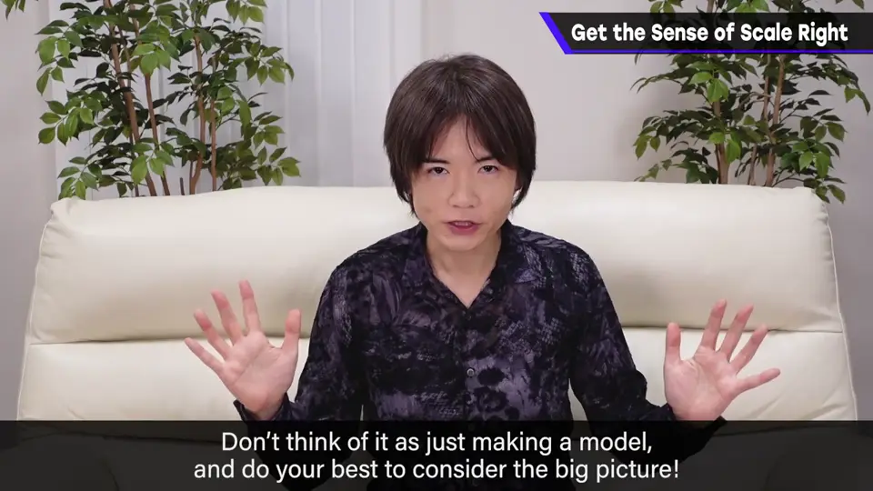
自测题
1. 尺度感问题通常表现为什么？
大东西看起来比应有的小；反过来很少见。 0:33
2. 列举三个影响尺度感的贴图/材质因素。
贴图循环与材质尺寸、饱和度、高光、法线贴图、污渍与色相变化（任选三）。 1:20
3. 为什么樱井没有提模型形状？
实物与模型形状相同；形状的优先级低于贴图与材质等因素。 2:50